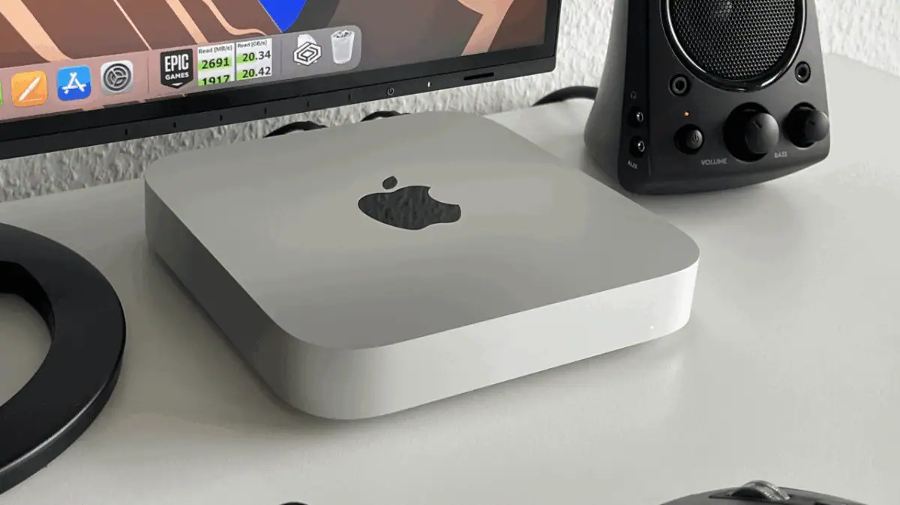

Breaking News
 April 20
April 20
by Casey Quinn
Apple delays Mac Studio and MacBook Pro launches due to global memory shortages driven by AI demand, pushing expected releases further into late 2026 and 2027
If you were hoping to upgrade your Mac soon, you might need a bit more patience. Apple’s next Mac Studio and MacBook Pro aren’t arriving as quickly as expected. The Mac Studio, which many thought would show up around mid-year, could now be pushed back to October. As for the next MacBook Pro, it was already expected sometime between late 2026 and early 2027 — but now it looks like it may land closer to 2027 instead. The interesting part is that the delay doesn’t seem to be about the products not being ready. Instead, Apple appears to be holding off because it knows it might not be able to produce enough units right away.
If you’ve been planning to upgrade your Mac, this is basically a heads-up: you might be waiting longer than expected. The interesting part is why—it’s not that Apple isn’t ready, it’s that there just aren’t enough key parts to go around. With AI demand eating up a lot of global supply, even a company like Apple can’t fully avoid the squeeze.
The real problem is that there aren't enough memory parts like RAM and storage around the world, not just for Apple. Demand is through the roof right now, mostly because of AI. Companies all over the world are building powerful systems and data centers that need a lot of memory. That leaves fewer resources available for everyday devices like laptops and desktops. Apple has tried to stay ahead of the problem by securing supplies early and even paying more for components, but even that hasn’t been enough to fully avoid the impact.
Even with the delays, there’s still a lot of excitement around what’s coming. The next MacBook Pro is likely to be a big improvement. It could have a better OLED screen, a touchscreen (which Apple has always been against), and faster chips, like the M6 Pro and M6 Max. There are also hints of smarter interface changes designed to make using a touchscreen feel natural on a Mac. The Mac Studio, meanwhile, is expected to stay focused on high-performance users — especially people working with demanding tools like AI models.
What makes this situation even more interesting is that demand is already very high. Some current Mac Studio models are already hard to find, especially the versions with more memory. That shows just how many people are looking for powerful machines right now, particularly for AI-related work. But with memory supply expected to stay tight for a while, Apple is in a tricky position. Rather than rushing products out and not having enough to sell, the company seems to be choosing to wait — even if that means users have to wait too.
Keep an eye on the supplies. These launches might happen sooner if memory issues get improved, but if demand for AI keeps rising up, the delays might go even longer. Also, watch how Apple deals with it. Will they stick with fewer, higher-end versions, or will they find ways to get more gadgets out faster?

Casey Quinn is a U.S. technology reporter covering innovation, digital policy, and emerging trends in the tech industry.